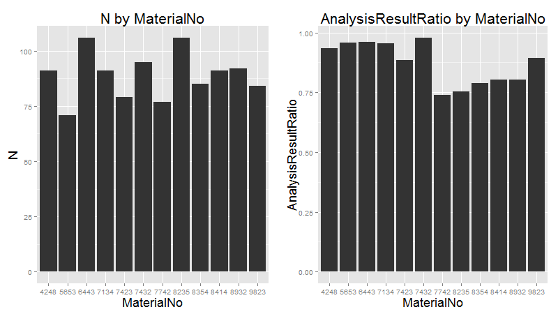

Data was saved in a SQLite database. It was then analyzed and visualized with R. We analyzed three different variables containing information about a product: The customer (CustomerNo), the material type (MaterialNo) and the result of the spectral analysis (AnalysisResult) carried out at the end of the production line.
OK or Not OK First, we analyzed information about products aggregating by customers. The following graphs shows that each customer orders a similar number of products and that the ratio of OK to NOK products is alike.
As such the spectral analysis result is not dependant on the customer.
Next, we analyzed product data grouping by the type of material (MaterialNo) used. There are 12 different types. Here we start to see several differences in the data depending on the type of material used.
First, we aggregated data from the Milling and Drilling processes by calculating the average Milling and Drilling Heat per product. After this we grouped the data by material type. The following graphs show the value distributions of the averages per material type:
These graphs show that it might be possible to split the 12 material types into 2 material groups, each consisting of 6 types.


The scatter plot shows two clusters of average Milling and Drilling Heat, giving further evidence of 2 groups of material types. 
Next, we aggregated the result of the spectral analysis by the material type. The number of products produced per material types seems to be insignificant. Assuming two different groups of material types, however, leads to evidence of worse analysis results for the second group of material types. 
To confirm our assumption of two different material groups we looked further into the Milling and Drilling processes. These show the following (per product):
Heat Speed Speed values depending on the processSpeed and Heat values, for Milling as well as Drilling The following graphs show two exemplary products, each in a different material group:

Lastly, we tried to predict the result of the spectral analysis at the end of the production line by analyzing Milling and Drilling processes. Because the Speed values are equal depending on material group and process only the Heat values can be significant. As such we compare two products with the same material type, one of which is OK while the other is Not OK.
The following graphs show that the spectral analysis result is not dependant on the values measured during the processes, because both products show very similar values. Another argument to support this is given by the distribution of Heat values, which shows that the distribution of OK and Not OK is very similar.


To confirm the result above we tried using a discriminant analysis. We generated one function by taking into account the standardized average of Milling and Drilling Heat values per product. The following graph shows the result of filtering by a single material type.
As such we could not predict the spectral analysis result by using a discriminant analysis, because the distribution for OK and Not OK products is very similar for the function. 
Taking into account the analysis above, we were able to make the following assumptions:
Milling and Drilling processesSpeed valuesThe Java project is divided into 6 parts:
The Main class starts the simulation and a ConnectionHandler to collect the data from the event stream as well as the HTTP and the WebSocket server.
To collect data from the simulation, the ConnectionHandler starts 3 listeners that run in different threads. Two of them are MessageListeners which use a MessageConsumer to read ERP and OPC data from the event stream. The third one (SAReader) uses a FileWatcher that gets notified when a new file is created with the spectral analysis data. All 3 listeners are Observable and give the resulting XML/JSON String to the Observer. The Observer is a MessageHandler, which writes the events into a queue, to be processed further.
The queue is processed by a MessageWorker, which is also a Thread and constantly looks in the queue for new messages. After getting a message, the worker reads the type of the message and calls a factory which converts the data into a Java object depending on the type (ERP, OPC, SA).
After the objects are created, the MessageWorker passes them to the ProductHandler. If the object is a ERP data a new Product object is created. Each Product contains a Finite State Machine which observes the current state of the product. If the object given to the ProductHandler is an OPCDataItem or a SAData the ProductHandler loops over every active Product to check if the event can be assigned to the product. This is evaluated with the current state of the Product and the trigger which is connected to the object.
After the event is assigned to a Product it is given to the WebSocket server and the database.
The WebSocket server recieves each new event, creates a MessageObject, which is then converted to JSON. This string is sent to each client connected to the server.
After a product is finished (after the spectral analysis) the data contained in each product is stored in an SQLite database.
The HTTP server takes aggregated historical data out of the database and exposes this data in a REST API. The following calls are available:
/data/getLastProducts: Gets aggregated data about the last 25 products/data/getDataByAnalysisResult: Gets data grouped by spectral analysis result/data/getDataByMat: Gets data grouped by material number/data/getDataByMatGrp: Gets data grouped by material group (see Analysis results)To track the current position of a product a Finite State machine is used.
The finite State machine has following states:
with following triggers:
The product takes following path: 
Hier wird die deta gestored
m_orders
<?xml version="1.0" encoding="UTF-8" standalone="yes"?>
<erpData>
<customerNumber>4716</customerNumber>
<materialNumber>9823</materialNumber>
<orderNumber>f747ec21-1928-436e-b2f3-504ca33c551f</orderNumber>
<timeStamp>2015-07-15T13:33:56.665-04:00</timeStamp>
</erpData>
m_opcitems
<?xml version="1.0" encoding="UTF-8" standalone="yes"?>
<OpcDataItem>
<itemName>Lichtschranke 1</itemName>
<status>GOOD</status>
<timestamp>1436981636743</timestamp>
<value xsi:type="xs:boolean" xmlns:xs="http://www.w3.org/2001/XMLSchema"
xmlns:xsi="http://www.w3.org/2001/XMLSchema-instance">false</value>
</OpcDataItem>
JSON file
{
"em1":82.84782409018561,
"em2":92.55025258144875,
"a1":90.68883374006916,
"a2":38.089310170829044,
"b2":3525.1752769633727,
"b1":7513.372544641339,
"overallStatus":"NOK",
"ts_start":1436978781258,
"ts_stop":1436978792262
}